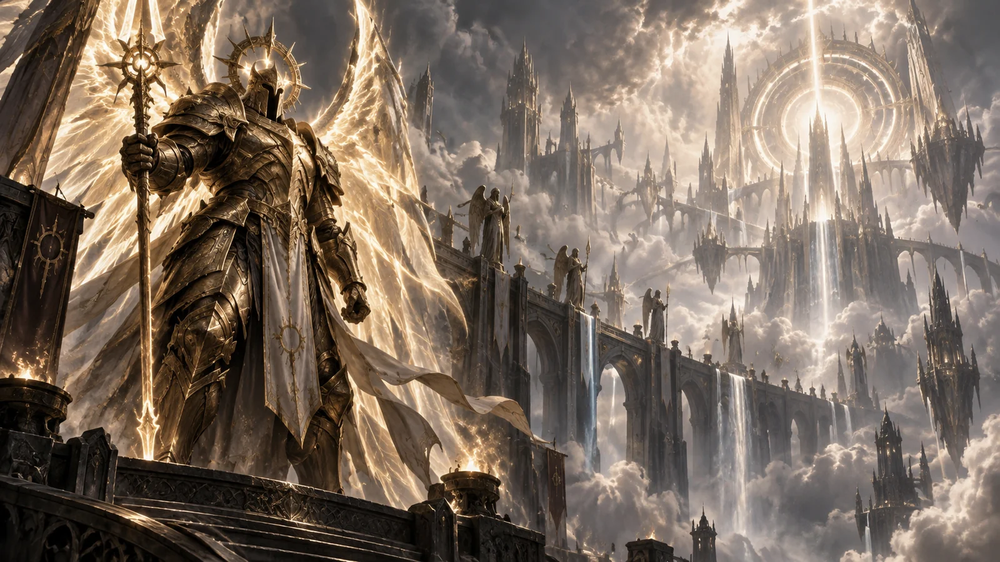

Erzengel der Tapferkeit
Imperius
Imperius ist der militärische Anführer der Hohen Himmel und einer der kompromisslosesten Vertreter des Angiris-Rates. Seit unzähligen Zeitaltern führt er die himmlischen Heerscharen gegen die Brennenden Höllen und gilt als einer ihrer mächtigsten Krieger.
Seine Stärke ist zugleich seine größte Schwäche: Imperius betrachtet die Welt durch die Perspektive des Ewigen Konflikts. Für ihn sind Entschlossenheit, Reinheit und Stärke entscheidend – und genau deshalb begegnet er der Menschheit mit tiefem Misstrauen. Die Nephalem verkörpern eine Mischung aus Engel und Dämon und widersprechen damit jener klaren Ordnung, die Imperius verteidigt.
- Aspekt
- Tapferkeit
- Waffe
- Solarion, Speer der Tapferkeit
- Rolle
- Militärischer Anführer der Himmel
- Haltung zur Menschheit
- Skeptisch bis feindselig